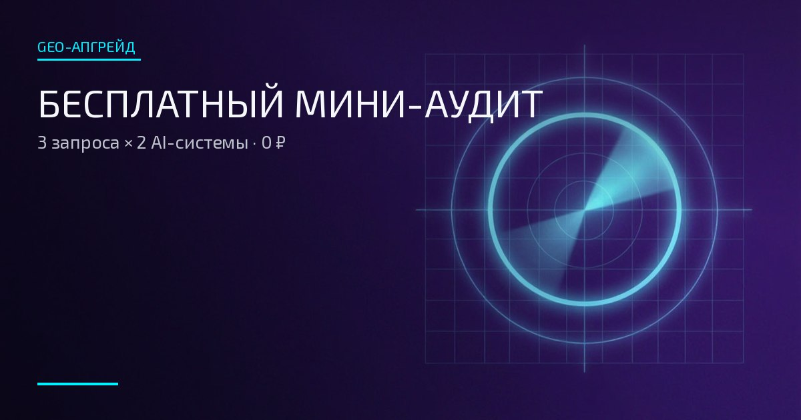

Локальный бизнес
Клиенты ищут вас через ИИ и карты — покажем, что видит нейросеть

FREE AUDIT · 0 ₽
Три ключевых запроса через две AI-системы. Показываем стартовую точку: кого нейросети называют вместо вас, насколько точны сведения и на какие источники опирается ИИ.
Без доступа к рекламным кабинетам. Результат — мини-сводка с первыми шагами.
SERVICE BRIEF
«Бесплатный мини-аудит» — стартовая проверка AI-видимости бренда. Мы прогоняем три ключевых запроса через две AI-системы и показываем, что нейросети сегодня говорят о бренде, кого называют вместо него и насколько верны приводимые сведения.
Мини-аудит не заменяет GEO-сканер Лайт или Полный: он показывает стартовую точку — без глубокой разработки запросов, анализа конкурентов и рекомендаций.
SERVICE CARD
| Формат | Бесплатная проверка AI-видимости |
| Объём | 3 ключевых запроса × 2 AI-системы (6 прогонов) |
| Что проверяется | Бренд, конкуренты, точность сведений, типы источников |
| Срок | 1–2 рабочих дня |
| Доступ к кабинетам | Не нужен |
WHO IT'S FOR
Клиенты ищут вас через ИИ и карты — покажем, что видит нейросеть
Проверить, попадаете ли вы в рекомендации по профессиональным запросам
Понять стартовую точку перед решением о глубоком аудите
Простой и бесплатный способ посмотреть на бренд глазами AI
WHAT'S INSIDE
PROCESS
DELIVERABLES
INVESTMENT
Срок: 1–2 рабочих дня
Формат бесплатный: чтобы вы увидели методику в работе и стартовую точку своего бренда.
Оставить заявкуHONEST BOUNDARIES
FAQ
Нет. Ответы AI изменчивы. Мы измеряем видимость, находим пробелы и усиливаем информационную основу бренда.
Нет. Это стартовая точка: три запроса и две системы. Сканер Лайт — 6 запросов × 3 системы с разработкой запросов через аватаров клиентов. Сканер Полный — глубже: 12–20 запросов × 4 системы, конкуренты и направления.
Это нормальный стартовый результат и одна из типовых причин заказать сканер: за непопулярностью стоит отсутствие бренда в источниках, которые читает ИИ.
Оставьте ссылку на бренд — проведём первичную проверку и покажем, с чего начать.
Хотите сначала прикинуть бюджет? Сколько стоит GEO-продвижение в 2026: вилки по рынку и наш прайс →
Методика в действии: как выглядит разбор отзывов по авторской методике — разбор Make Love Pizza: 493 отзыва →
Получить бесплатный мини-аудитЗаявка оформляется через форму на странице контактов.